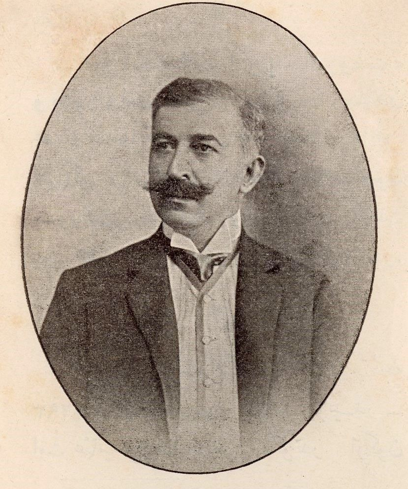
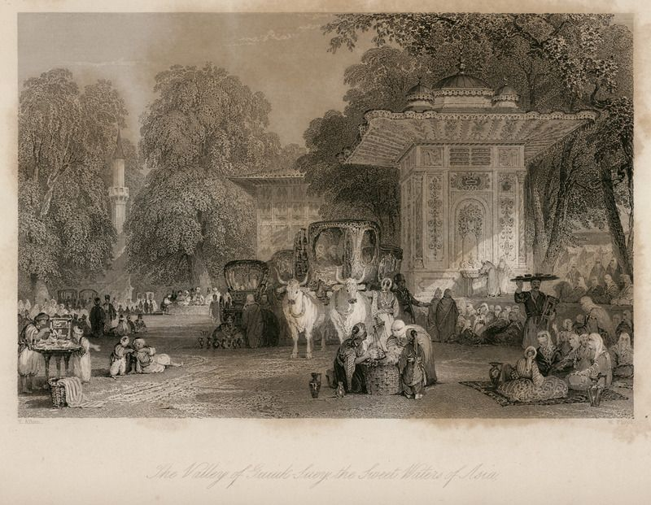
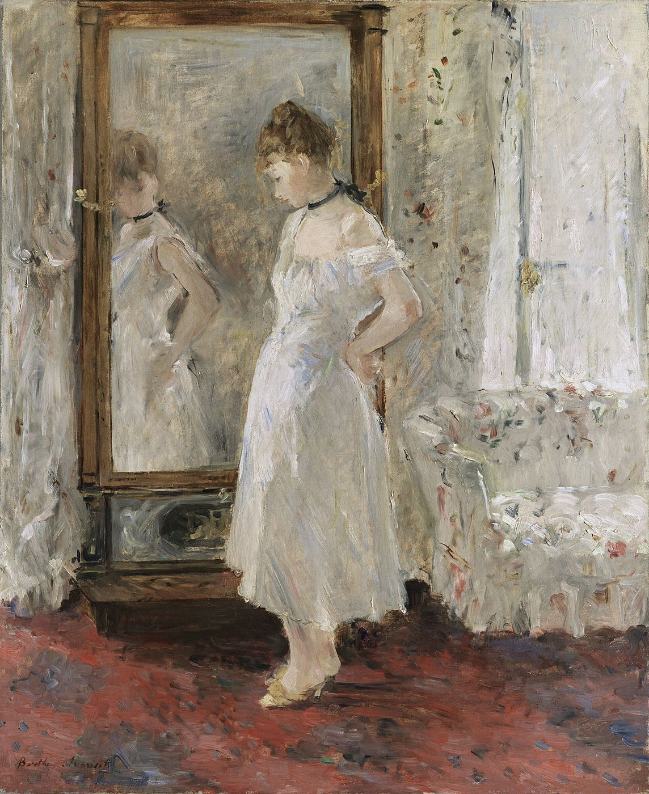

Cet essai a d’abord paru en turc. Aşk-ı Memnu (1900), l’un des romans fondateurs de la littérature turque moderne, signifie « L’Amour interdit » ; je le cite sous son titre turc. La version française est de ma main.


Concupiscentiam nesciebam, nisi lex diceret: Non concupisces.
Paul, Épître aux Romains 7, 7 (Vulgate)
I
Au septième chapitre de l’Épître aux Romains se trouve l’une des phrases les plus troublantes de la pensée occidentale sur le rapport entre le désir et la loi : je n’aurais pas connu la convoitise, si la loi n’avait dit : Tu ne convoiteras point. Pour Paul, cette phrase est un aveu ; le péché, bien qu’il ne naisse pas de la loi elle-même, s’anime par la loi et se fait connaître. Dans son séminaire sur l’éthique de 1959–1960, Lacan relit ce passage et met à la place du mot « péché » la Chose de son propre vocabulaire conceptuel, l’objet absolu du désir qu’on n’atteint jamais. La loi ne se contente pas de refouler le désir ; elle en fait aussi apparaître l’objet, elle lui donne un éclat que les objets ordinaires ne pourront jamais avoir.1
Le titre du roman de Halit Ziya fait tenir cette pensée dans un syntagme. La lecture courante entend dans « amour interdit » l’interdit comme un malheur advenu à l’amour ; or, à mesure que les pages avancent, le roman montre le rapport inverse. Ce qui rend Behlül précieux pour Bihter, ce sont moins ses qualités propres que le fait qu’il se tienne derrière un interdit. Le roman est impitoyable sur ce point : Behlül, le neveu d’Adnan Bey, est un jeune homme léger, coureur, qui aime être aimé et ne peut nouer aucun lien durable. Tout son attrait vient de la place où il se trouve : dans la maison du mari de Bihter, en parent de son mari, une figure vue chaque jour, mais qu’on ne pourra jamais posséder. Que le charme tombe quand tombe l’interdit est une expérience que connaissent tous ceux qui ont vécu un amour interdit ; c’est ce que le roman montre du côté de Behlül. Le mot du titre lui-même porte cette structure. Memnu, venu de l’arabe, dérive d’une racine qui signifie empêcher, retenir, défendre ; est memnu ce devant quoi l’on a placé un obstacle, ce dont on a été tenu à l’écart. Bien que le mot turc memnuniyet, contentement, vienne d’une tout autre racine, entendre côte à côte ces deux mots proches à l’oreille, l’interdit et le contentement, ajoute au titre une ironie que le lecteur remarque rarement. Dans le roman de Halit Ziya, le contentement ne paraît possible que derrière un obstacle, à l’ombre d’un interdit.
II
Aşk-ı Memnu parut en feuilleton dans la revue Servet-i Fünun en 1899–1900 et en volume en 1900. On le tient pour le roman le plus mûr de l’Edebiyat-ı Cedide, la « Littérature nouvelle », et pour l’un des premiers grands romans psychologiques en turc, et il mérite ce qualificatif : Halit Ziya s’intéresse moins aux actions de ses personnages dans le monde extérieur qu’aux remous de leur monde intérieur, et dévoile doucement au lecteur ce qu’ils se cachent à eux-mêmes. Ce qui le rend possible, c’est le discours indirect libre, que Halit Ziya fut le premier à manier avec une telle maîtrise dans la prose turque : les phrases du narrateur, à la troisième personne, glissent insensiblement vers la voix intérieure du personnage ; le lecteur entend les pensées de Bihter non de sa bouche, mais depuis son point de vue, presque avec son souffle. Pour une lecture psychanalytique, cette technique est un cadeau ; car le roman rend visible, dans le tissu même de la phrase, l’écart entre ce que le personnage se dit et ce qu’il se cache, le lieu où travaille l’inconscient. Halit Ziya écrivit ce roman à trente-trois ans. Né à Istanbul en 1866, il avait passé son enfance et sa jeunesse à Izmir, y avait appris le français et lu le roman français de première main ; il devint plus tard premier secrétaire du palais sous le sultan Mehmed V Reşad, et publia vers la fin de sa vie ses mémoires sous le titre Kırk Yıl, « Quarante ans ».2 Dans sa vieillesse, l’auteur simplifia lui-même la langue de ses romans ; l’Aşk-ı Memnu que nous lisons aujourd’hui est pour l’essentiel ce second texte, simplifié. Qu’un roman soit réécrit par son auteur trente ans plus tard ressemble étrangement à ce que raconte son histoire : le passé se reconstruit après coup, dans une autre langue. La critique a souvent comparé le roman à Madame Bovary, et la comparaison est juste. Ce que Jules de Gaultier, en 1892, nomma bovarysme à partir de l’héroïne de Flaubert, le pouvoir qu’a l’être humain de se concevoir autre qu’il n’est, se tient aussi au cœur de l’histoire de Bihter.3
Un autre versant de la comparaison est le rapport de ces romans à leur société. Flaubert fut jugé l’année qui suivit la parution de Madame Bovary en feuilleton dans la Revue de Paris, en 1856, pour outrage à la morale publique et religieuse, et acquitté. Anna Karénine, achevé par Tolstoï en 1877, disait dans sa célèbre première phrase que toutes les familles heureuses se ressemblent, mais que chaque famille malheureuse l’est à sa façon ; Anna aussi, comme Bihter, mettrait fin à ses jours au terme d’un amour interdit.4 Aşk-ı Memnu ne connut pas de procès ; mais la revue où parut le roman de Halit Ziya, Servet-i Fünun, fut fermée un an plus tard, en 1901, par le régime d’Abdülhamid II à cause d’un article traduit du français, et le groupe de la Littérature nouvelle se dispersa.5 À une époque où la censure surveillait tout, ce n’est pas un hasard si tout le drame du roman se déroule entre les murs d’un yalı, une demeure au bord de l’eau, dans les relations silencieuses d’une famille. Les conflits indicibles de la société s’étaient retirés dans une maison, dans les regards des femmes, devant les miroirs, dans les paroles tues.
Mais Bihter n’est pas une Emma Bovary. Les rêves d’Emma se nourrissent des romans qu’elle lit ; la source des rêves de Bihter est bien plus proche : dans la maison de sa mère. Le roman précédent de Halit Ziya, Mai ve Siyah, « Le Bleu et le Noir », paru en feuilleton en 1897, lui aussi dans Servet-i Fünun, racontait l’histoire d’Ahmet Cemil, un jeune poète écrasé entre la grandeur de ses rêves et l’étroitesse de sa vie ; dans le titre, le bleu était la couleur des rêves, et le noir celle de la réalité.6 Dans Aşk-ı Memnu, cette opposition passe des rêves littéraires d’un homme au désir d’une femme, d’une table à écrire aux chambres d’un yalı. La veine la plus féconde du roman pour la psychanalyse est que le désir de Bihter est, dès le premier instant, tissé du désir d’une autre femme : sa mère.
III
Bihter est la fille cadette d’une famille du Bosphore qu’on appelle « la bande de Melih Bey ». Sa mère, Firdevs Hanım, est veuve, belle, refuse de laisser partir sa jeunesse, et l’on parle d’elle sans cesse ; sa sœur aînée, Peyker, est mariée depuis longtemps. Ce sobriquet est moins le nom d’une famille que celui d’un commérage : le lieu où le désir des femmes est tombé dans la bouche du voisinage. Toutes les femmes du roman vivent sous le regard de cette langue, de ce commérage. Les yalı du Bosphore sont proches les uns des autres, les barques passent les unes devant les autres, les fenêtres se regardent ; qui a été vu avec qui, qui est monté dans quelle barque, qui est entré chez qui et à quelle heure, tout cela circule de bouche en bouche le long de la rive. Ce que Lacan appelle le regard fonctionne ici non comme l’œil d’une personne particulière, mais comme un œil qui est partout et ne se voit nulle part : le voisinage lui-même. Toute la vie de Bihter s’est construite, face à ce regard, sur le refus d’être comme sa mère une femme « dont on parle » ; et le roman est l’histoire de sa transformation en ce que ce regard redoute le plus. Firdevs Hanım, qui croit qu’Adnan Bey, riche veuf d’environ quarante-cinq ans, s’intéresse à elle lors de leurs promenades en barque, attend une demande en mariage. La demande vient ; mais pour sa fille. Le roman laisse entendre que Bihter connaissait l’attente de sa mère et regarda sa défaite avec un plaisir silencieux.
Le mariage de Bihter accomplit ainsi deux choses à la fois : une fuite hors du monde de sa mère et une victoire sur sa mère. L’une des plus anciennes leçons de la psychanalyse est que ce que l’on fuit est souvent ce que l’on répète avec la plus grande fidélité. Bihter prend l’homme que voulait sa mère ; elle hérite son désir, pour ainsi dire, du désir de sa mère. Dans « Sur la sexualité féminine » (1931), Freud avait montré que l’attachement de la fille à la mère dure bien plus longtemps qu’on ne le croyait, que ce lien est mêlé d’une profonde hostilité, et que les reproches de la fille envers la mère peuvent persister à l’âge adulte.7 Lacan, en 1972, nomme d’un seul mot dur le rapport que bien des femmes entretiennent avec leur mère : ravage.8 La guerre silencieuse entre Firdevs Hanım et Bihter est une version de ce ravage qui se déroule dans un yalı du Bosphore.
Firdevs Hanım elle-même est l’une des figures les plus tragiques du roman, même si Halit Ziya la montre le plus souvent sous un jour moqueur. À mesure que ses filles grandissent, elle vieillit, et ne veut pas l’accepter. C’est une vie passée avec des miroirs, des toilettes, à essayer de se voir encore, parmi les jeunes, comme une femme désirée. Un type de femme que Freud décrit en 1914 dans son article sur le narcissisme, la femme qui se nourrit moins d’aimer que de se voir aimée, est presque aussi net qu’une caricature chez Firdevs Hanım.9 Mais derrière cette caricature se cache une peur : que le regard se retire, ne plus être vue, cesser d’être l’objet du désir pour devenir une mère, une vieille femme, un passé. Bihter méprise et hérite à la fois cette peur de sa mère. Ce que Bihter vit face à Nihal à la fin du roman est exactement ce que Firdevs Hanım vécut face à Bihter : sentir que la présence d’une femme plus jeune vous ôte votre place.
IV
L’une des scènes les plus célèbres du roman est celle où Bihter, revenue d’une promenade à Göksu, se dévêt et contemple son propre corps devant le miroir. Dans les années où Halit Ziya écrivit cette scène, il était extrêmement rare, dans le roman turc, qu’une femme regarde son propre corps d’un regard aussi long et aussi direct.


Lire cette scène comme un simple éveil de la sensualité la diminue. Bihter devant le miroir se regarde avec les yeux d’un autre ; et la vraie tension de la scène naît de l’incertitude sur l’identité de cet autre. Le concept lacanien de stade du miroir décrit exactement cela : le moi se constitue d’abord au-dehors, dans une image, offert à un regard. Ce que Bihter découvre dans le miroir n’est pas la beauté de son corps, mais la question de savoir à qui appartient cette beauté : pour qui ce corps existe-t-il ? Pour son mari, pour elle-même, pour un autre qui n’a pas encore de nom ?


La psychanalyste britannique Joan Riviere avait soutenu, dans son célèbre article de 1929, que la féminité ne peut se distinguer d’un masque porté face au regard des autres.10 Lacan joint cette idée à la question devant laquelle l’hystérie place sans cesse le sujet. Dans son troisième séminaire, il dit qu’au cœur de la question hystérique se trouve la question : « Qu’est-ce qu’une femme ? »11 Bihter devant le miroir pose cette question, prise entre les deux réponses qu’on lui a offertes. L’une est la vie de sa mère : la femme dont on parle, dont le désir est devenu la propriété du voisinage. L’autre est la vie qu’offre la maison de son mari : une épouse respectable, protégée et privée de désir. La tragédie de Bihter tient à ce qu’aucune des deux ne lui appartient, à ce que toutes deux sont une place que lui assigne quelqu’un d’autre, une mère ou un mari.
V
Adnan Bey offre à Bihter tendresse, fortune et position respectable. Mais il manque quelque chose au mariage, et le roman fait sentir ce manque pendant des pages sans jamais le nommer. Dans son article de 1912, « Sur le plus général des rabaissements de la vie amoureuse », Freud écrit que chez bien des gens l’amour se partage en deux courants : la tendresse et la sensualité. Ces gens, selon la phrase inoubliable de Freud, ne désirent pas là où ils aiment, et ne peuvent aimer là où ils désirent.12 Aşk-ı Memnu répartit ce clivage à l’intérieur d’une maison, entre deux hommes. Adnan Bey est du côté de la tendresse, de la loi et de l’ordre ; Behlül, du côté du désir. Mais Behlül lui-même est un vide. Sa valeur d’objet du désir vient, comme celle de l’objet que désigne la loi de Paul, de la place où l’interdit le pose. Le désir propre de Behlül porte l’autre face du même clivage. Le roman le dessine en jeune homme qui aime être aimé, qui se confirme dans l’attention de nombreuses femmes, mais ne peut s’attacher à aucune. Il désire Bihter tant qu’elle se tient derrière un interdit ; quand l’interdit s’effondre, c’est-à-dire quand Bihter lui appartient vraiment, son intérêt se disperse. Comme l’homme que décrit Freud, il ne peut désirer là où il aime, ni aimer là où il désire ; sa conversion vers Nihal est peut-être une tentative de passer non du côté du désir, mais du côté d’une femme respectable, sûre, « à aimer ». Le vide de Behlül tient moins à sa méchanceté qu’à la légèreté de quelqu’un qui n’a jamais interrogé son propre désir.
VI
Dès qu’il possède Bihter, l’intérêt de Behlül commence à se disperser, et il finit par se fiancer avec la fille d’Adnan Bey, Nihal. C’est ici qu’apparaît le trait structurel peut-être le moins remarqué, mais le plus aigu, du roman. Firdevs Hanım avait perdu l’homme qu’elle attendait au profit d’une femme plus jeune qu’elle, sa fille Bihter. À présent, Bihter perd l’homme qu’elle aime au profit d’une femme plus jeune qu’elle, la fille de son mari, Nihal. Bihter tombe en plein milieu du lieu qu’elle avait fui : la position de sa mère.
Dans Au-delà du principe de plaisir (1920), Freud parle de personnes dont la vie semble gouvernée par un destin, et souligne que ce destin est pour une large part agencé par l’inconscient même du sujet.13 L’histoire de Bihter est le roman de la manière dont le désir des femmes se transmet de génération en génération, dont la défaite d’une mère a l’air d’être la victoire de sa fille et se change en son destin. Ce que Bihter éprouve envers Nihal est, de ce point de vue, plus qu’une simple jalousie. Nihal est l’être que son père aime le plus ; elle détient, dans la maison, un lien où Bihter ne pourra jamais vraiment entrer. Que Behlül se tourne vers Nihal révèle sans pitié combien la place de Bihter dans cette maison est fragile : elle n’est ni la fille de cette maison ni sa véritable maîtresse.
La personne dont on parle le moins dans ce triangle est peut-être Adnan Bey. Un homme qui épouse une femme de l’âge de sa fille, qui ne voit pas, ou choisit de ne pas voir, jusqu’au bout ce qui se passe dans sa maison. Qu’Adnan Bey ne soupçonne rien tout au long du roman paraît presque incroyable au lecteur : les regards entre sa femme et son neveu, les humeurs changeantes de Bihter, la tension dans l’air de la maison lui échappent. La psychanalyse lit ce genre d’aveuglement moins comme une ignorance que comme un vouloir ne pas savoir. Ne pas voir est pour Adnan Bey une manière à la fois de ne pas admettre que son propre mariage est grevé d’une limite, d’un âge, d’un manque, et de ne pas affronter une vérité qui pourrait briser le lien privilégié qu’il a avec sa fille. Quand la vérité éclate, la première chose que fait Adnan Bey est de revenir à sa fille, à l’ordre ancien, à leur intimité à deux. Le roman ne montre pas son deuil ; la maison se referme sur l’absence de Bihter comme si rien ne s’était passé.
Nihal elle-même mérite, dans une lecture psychanalytique du roman, autant d’attention que Bihter. Halit Ziya la dessine en jeune fille nerveuse, fragile, souvent saisie de crises, qui vit des nuits sans sommeil. Nihal est passionnément attachée à son père ; elle vit son mariage comme une trahison, et aborde sa belle-mère d’abord avec froideur, puis avec hostilité, puis avec une étrange proximité. Ce tableau rappelle de façon frappante Dora, la jeune fille de dix-huit ans que Freud soignait à Vienne dans les mêmes années. Dora aussi est attachée à son père, et éprouve envers la femme avec qui son père a une liaison, Mme K., à la fois de la jalousie et une profonde admiration ; ses quintes de toux, son aphonie, ses idées de suicide sont des éléments du tableau que Freud appelait hystérie.14 Dans la lecture que Lacan fait de Dora, l’intérêt de la jeune fille pour Mme K. exprime une curiosité pour le secret de la féminité : qu’est-ce qui rend son père désirable en tant que femme ? La même question peut se lire dans le regard de Nihal sur Bihter. Bihter est la femme que son père aime ; la femme que Nihal n’est pas encore, qu’elle a peur de devenir, et peut-être veut devenir. À la fin du roman, Nihal apprend en même temps la trahison de Behlül et le secret de Bihter ; et avec cette découverte, elle voit combien c’est un lieu dangereux que d’être désirée en tant que femme. Le retour à l’ancienne intimité du père et de la fille est, sous cet angle, moins une victoire qu’un repli : de la question d’être une femme vers le lieu sûr d’être la fille du père.
VII
Le miroir de Bihter ne peut manquer de rappeler un autre miroir célèbre. Dans le conte de Blanche-Neige recueilli par les frères Grimm, la reine demande chaque jour à son miroir qui est la plus belle du pays ; et un jour, le miroir répond que ce n’est plus la reine, mais la jeune fille qui grandit. Un détail peu connu du conte est presque bouleversant au regard d’Aşk-ı Memnu : dans la première édition des Grimm, en 1812, la reine jalouse est la propre mère de Blanche-Neige ; ce n’est que dans l’édition de 1819 qu’elle devient une marâtre.15 Bruno Bettelheim, dans le livre qu’il a consacré à la lecture psychanalytique des contes, interprète Blanche-Neige comme la mise en scène de la rivalité œdipienne entre mère et fille : à mesure que la jeune fille grandit, elle menace la place de la mère, et la voix du miroir est cette menace qui se dit.16
Le roman de Halit Ziya joue deux fois cette structure de conte, sur deux générations. Entre Firdevs Hanım et Bihter, il y a la rivalité d’une mère et de sa fille ; entre Bihter et Nihal, celle d’une belle-mère et de sa belle-fille. Dans la première scène, Bihter est la jeune fille, et elle gagne ; dans la seconde, elle devient la reine, et elle perd. Le miroir du roman, comme celui du conte, est un miroir qui dit que le temps a passé. La place de Nihal mérite aussi d’être pensée sous cet angle : une jeune fille aux nerfs fragiles, qui a perdu sa mère tôt, passionnément attachée à son père, élevée sous la protection de sa gouvernante française, Mademoiselle de Courton. Freud avait explicitement refusé d’appeler l’attachement de la fille au père un « complexe d’Électre », comme le proposait Jung ; pour lui, le développement de la fille n’était pas le reflet de celui du garçon, mais une voie distincte et plus détournée, commençant par l’attachement à la mère.17 À la fin du roman, quand la maison revient à l’ancienne intimité du père et de la fille, c’est Nihal qui gagne ; mais le prix de cette victoire reste une question que le roman ne pose pas ouvertement.
VIII
La fin arrive à toute vitesse. Nihal assiste à une dispute entre Bihter et Behlül et apprend la liaison secrète ; tout éclate. Behlül quitte la maison. Bihter, n’ayant rien trouvé de ce qu’elle attendait, met fin à ses jours. Le roman se clôt sur le retour de la maison à son ordre ancien, sur Adnan Bey et Nihal retrouvant leur ancienne intimité.
Le dernier acte de Bihter est l’image littéraire d’un moment que la psychanalyse pense avec soin. Dans son séminaire sur l’angoisse de 1962–1963, Lacan distingue l’acting out du passage à l’acte. Dans l’acting out, le sujet reste sur une scène ; sa conduite est un message adressé à un autre, qui attend d’être compris. Dans le passage à l’acte, au contraire, le sujet choit de la scène : sous le regard qui le regarde, à un moment où il ne reste plus de place pour aucune parole, aucun message, il se laisse tomber hors du monde comme un objet.18 L’exemple de Lacan est une jeune femme que Freud décrivit en 1920 : marchant dans la rue avec la femme qu’elle aime, elle croise le regard furieux de son père et, à cet instant, se jette dans une tranchée de chemin de fer. Le dernier moment de Bihter aussi, tel que le roman le raconte, vient après un regard, celui de Nihal et d’Adnan Bey, après un moment où tous ses secrets sont mis à nu. Voir cette structure importe non pour expliquer le destin d’une héroïne littéraire, mais pour se rappeler combien de tels moments sont lourds dans la clinique, et pourquoi, aux moments où le sujet ne se voit plus, sous le regard d’un autre, que comme un objet « chu », une parole, quelqu’un qui écoute, une limite sont vitaux. Il n’y a autour de Bihter pas une seule personne à qui elle puisse parler.
Lue cent vingt-cinq ans plus tard, cette fin dérange, et elle le doit. La femme qui suit son désir meurt, la loi et l’ordre reprennent leur place ; le roman, conformément au monde moral de son temps, semble punir le désir féminin. Mais cette lecture ne suffit pas à rendre compte de la puissance propre du roman. À la fin de son séminaire sur l’éthique, Lacan ramène l’éthique de la psychanalyse à une seule question : Avez-vous agi en conformité avec le désir qui vous habite ?19 La tragédie de Bihter est qu’elle ne peut ni renoncer à son désir ni le porter. Entre le destin de sa mère et la maison de son mari, elle ne trouve aucun lieu où elle pourrait être maîtresse de son propre désir. Sa mort est moins le triomphe de la loi que l’issue de cette position impossible ; et la vraie question du roman est de savoir pourquoi ne s’est jamais ouvert un troisième lieu où Bihter aurait pu vivre.
Post-scriptum
Le roman fut porté pour la première fois à l’écran en 1975, dans une série de six épisodes de la télévision publique turque TRT réalisée par Halit Refiğ, avec Müjde Ar dans le rôle de Bihter. La série de soixante-dix-neuf épisodes diffusée sur Kanal D en 2008–2010, avec Beren Saat, Kıvanç Tatlıtuğ, Selçuk Yöntem et Nebahat Çehre, devint un phénomène de société ; son dernier épisode figure parmi les émissions les plus regardées de l’histoire de la télévision turque.20 Lors du dernier épisode, des millions de spectateurs plaignaient Bihter, la comprenaient même, plus qu’ils ne la jugeaient. Qu’une histoire qui se déroule il y a plus de cent ans entre les murs d’un yalı paraisse si proche au spectateur d’aujourd’hui donne aussi à penser. Le commérage du voisinage a cédé la place au regard incessant des écrans ; qui a été vu avec qui ne circule plus le long de la rive, mais de téléphone en téléphone. Mais le désir d’une femme qui tombe dans la bouche des autres, une mère et une fille qui se tiennent tour à tour devant le même miroir, un interdit qui fait briller le désir semblent être restés inchangés. La raison en est, à mon sens, que l’amour interdit, avant d’être une affaire morale, est un fait structurel du désir : l’interdit fait briller l’objet, l’obstacle nourrit le désir, la répétition ramène ce qu’on a fui. Le travail psychanalytique n’offre ici ni permission ni interdiction ; il tente de séparer le désir de l’éclat des interdits. La question posée n’est pas « Est-ce interdit ? », mais « Que désiré-je vraiment, et de qui ce désir est-il le désir ? » C’est peut-être la question que Bihter n’a jamais pu poser. Tout au long du roman, elle semble chercher un lieu, quelqu’un qui écoute, un temps pour la poser ; mais dans aucune chambre du yalı, devant aucun miroir, il n’y a personne à qui elle puisse dire cette question à voix haute.
Notes
- J. Lacan, Le Séminaire, livre VII : L’éthique de la psychanalyse (1959–1960), Paris, Seuil, 1986, leçons consacrées au rapport de la Chose et de la loi. Lisant la phrase de Paul, Lacan dit explicitement qu’il substitue le mot « Chose » au mot « péché », et montre qu’avec ce changement le texte devient une description impeccable de la dialectique du désir et de la loi. ↩︎
- H. Z. Uşaklıgil, Kırk Yıl, Istanbul, Matbaacılık ve Neşriyat, 1936. Dans les années 1930, Halit Ziya simplifia lui-même la langue de ses romans, remplaçant dans les nouvelles éditions une partie des mots arabes et persans par des équivalents turcs ; les textes d’Aşk-ı Memnu les plus lus aujourd’hui reposent sur cette édition simplifiée. ↩︎
- J. de Gaultier, Le Bovarysme, la psychologie dans l’œuvre de Flaubert (1892) ; il élargit le concept dans Le Bovarysme, essai sur le pouvoir d’imaginer (1902). ↩︎
- Le procès de Flaubert se tint à Paris en janvier–février 1857 ; le réquisitoire du procureur Ernest Pinard et la plaidoirie de l’avocat Jules Senard furent joints aux éditions ultérieures du roman. Le roman de Tolstoï parut en feuilleton dans la revue Rousski Vestnik de 1875 à 1877. ↩︎
- La revue fut fermée temporairement en octobre 1901, après qu’un article intitulé « Littérature et droit », traduit du français par Hüseyin Cahit, eut été jugé répréhensible ; après sa réouverture, la plupart des écrivains du groupe cessèrent d’y écrire. ↩︎
- H. Z. Uşaklıgil, Mai ve Siyah, Istanbul, 1897. Le roman a été lu comme l’emblème de la désillusion de toute une génération de la Littérature nouvelle. ↩︎
- S. Freud, « Sur la sexualité féminine » (1931), in La Vie sexuelle. Les textes de Freud sont cités sous leurs titres français usuels, avec l’année de première publication. ↩︎
- J. Lacan, « L’étourdit » (1972), in Autres écrits, Paris, Seuil, 2001, p. 449–495. ↩︎
- S. Freud, « Pour introduire le narcissisme » (1914), in La Vie sexuelle. La description de Freud dans ce passage est aujourd’hui critiquée à bon droit ; mais l’observation d’une structure narcissique qui se construit dans le miroir de l’amour d’un autre et s’effondre quand ce miroir s’obscurcit garde sa valeur clinique, indépendamment du sexe. ↩︎
- J. Riviere, « Womanliness as a masquerade », International Journal of Psycho-Analysis 10 (1929), p. 303–313 ; en français : « La féminité en tant que mascarade », in Féminité mascarade, Paris, Seuil, 1994. ↩︎
- J. Lacan, Le Séminaire, livre III : Les psychoses (1955–1956), Paris, Seuil, 1981, leçons sur « La question hystérique ». ↩︎
- S. Freud, « Sur le plus général des rabaissements de la vie amoureuse » (1912), in La Vie sexuelle : « Wo sie lieben, begehren sie nicht, und wo sie begehren, können sie nicht lieben. » ↩︎
- S. Freud, Au-delà du principe de plaisir (1920), en particulier le chapitre III. ↩︎
- S. Freud, « Fragment d’une analyse d’hystérie (Dora) » (1905), in Cinq psychanalyses. L’analyse de Dora eut lieu à l’automne 1900, l’année même où Aşk-ı Memnu parut en volume. Dans « Intervention sur le transfert » (1951), Lacan souligne que l’intérêt véritable de Dora se portait vers Mme K., la femme qu’elle croyait détentrice du secret de la féminité. ↩︎
- J. et W. Grimm, Kinder- und Hausmärchen, 1re édition (1812) et 2e édition (1819), « Sneewittchen ». ↩︎
- B. Bettelheim, The Uses of Enchantment (1976) ; en français : Psychanalyse des contes de fées, Paris, Robert Laffont, 1976. Certains aspects des lectures de Bettelheim sont aujourd’hui critiqués à bon droit ; mais son observation sur la rivalité entre mère et fille compte parmi les apports durables du livre. ↩︎
- Freud, « Sur la sexualité féminine » (1931). Freud s’y oppose à l’usage du terme jungien de « complexe d’Électre ». ↩︎
- J. Lacan, Le Séminaire, livre X : L’angoisse (1962–1963), Paris, Seuil, 2004, leçons de janvier 1963. Lacan développe cette distinction en interprétant la jeune femme de l’article de Freud de 1920, « Sur la psychogenèse d’un cas d’homosexualité féminine », qui, se promenant avec la femme qu’elle aime, croise le regard furieux de son père et se jette à cet instant dans une tranchée de chemin de fer. ↩︎
- Lacan, Séminaire VII, dernières leçons. ↩︎
- Dans l’adaptation de 1975, Behlül était joué par Salih Güney, Firdevs Hanım par Neriman Köksal, Adnan Bey par Şükran Güngör. La série de 2008 fut diffusée du 4 septembre 2008 au 24 juin 2010. ↩︎
Bibliographie
- Bettelheim, B. (1976). Psychanalyse des contes de fées. Robert Laffont.
- Flaubert, G. (1857). Madame Bovary. Michel Lévy.
- Freud, S. (1905). Fragment d’une analyse d’hystérie. In Cinq psychanalyses. PUF.
- Freud, S. (1912). Sur le plus général des rabaissements de la vie amoureuse. In La Vie sexuelle. PUF.
- Freud, S. (1914). Pour introduire le narcissisme. In La Vie sexuelle. PUF.
- Freud, S. (1920). Au-delà du principe de plaisir. In Essais de psychanalyse. Payot.
- Freud, S. (1931). Sur la sexualité féminine. In La Vie sexuelle. PUF.
- Gaultier, J. de (1892). Le Bovarysme, la psychologie dans l’œuvre de Flaubert.
- Grimm, J. et Grimm, W. (1812, 1819). Kinder- und Hausmärchen. Realschulbuchhandlung.
- Lacan, J. (1966). Le stade du miroir comme formateur de la fonction du Je. In Écrits (p. 93–100). Seuil.
- Lacan, J. (1966). Intervention sur le transfert (1951). In Écrits. Seuil.
- Lacan, J. (1981). Le Séminaire, livre III : Les psychoses (1955–1956). Seuil.
- Lacan, J. (1986). Le Séminaire, livre VII : L’éthique de la psychanalyse (1959–1960). Seuil.
- Lacan, J. (2001). L’étourdit (1972). In Autres écrits (p. 449–495). Seuil.
- Lacan, J. (2004). Le Séminaire, livre X : L’angoisse (1962–1963). Seuil.
- Riviere, J. (1929). Womanliness as a masquerade. International Journal of Psycho-Analysis, 10, 303–313.
- Tolstoï, L. (1878). Anna Karénine.
- Uşaklıgil, H. Z. (1897). Mai ve Siyah. Istanbul.
- Uşaklıgil, H. Z. (1900). Aşk-ı Memnu. Istanbul.
- Uşaklıgil, H. Z. (1936). Kırk Yıl. Matbaacılık ve Neşriyat.